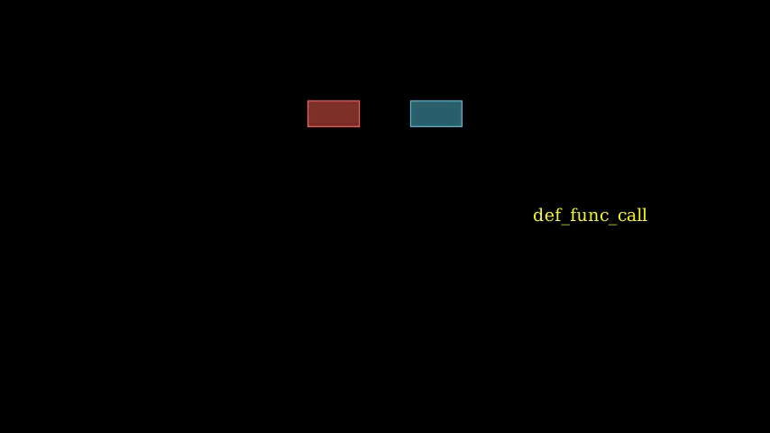

Animations For Function Units
isa_manim.isa_animate.function_animate.decl_function declares one function unit by fading in.
isa_manim.isa_animate.function_animate.read_func_imm declares one immediate operand of one function unit. The immediate operand will fade in at the specified position while other operands move to their positions.
isa_manim.isa_animate.function_animate.function_call presents how elements pass through one function unit. The animation has two steps.
- In the first step, argument elements move to arguments of one function unit.
- In the second step, argument elements fade out while result elements fade in.
An example for decl_function, read_func_imm and function_call is as below:

Source code: test_func_animation.py
The above functions generate a sequence of animations, but they do not register animation to Manim unless
play()is applied on the result values
function_animate
Animation with Function unit.
decl_func_unit(*func_unit)
Declare one function unit.
Parameters:
| Name | Type | Description | Default |
|---|---|---|---|
func_unit |
List[FunctionUnit]
|
Object of function. |
()
|
Returns:
| Type | Description |
|---|---|
Animation
|
Animation to declare function unit. |
function_call(func_unit, args_list, res_list, args_offset, res_offset)
Animation for calling one function.
This animation has the following steps:
- Move elements of source operands to the position of arguments.
- Wait 0.5 second.
- Fadeout the source operands and fadein the destination operands.
Parameters:
| Name | Type | Description | Default |
|---|---|---|---|
func_unit |
FunctionUnit
|
Object of function object. |
required |
args_list |
List[ElemUnit]
|
List of argument elements. |
required |
res_list |
List[ElemUnit]
|
List of result elements. |
required |
args_offset |
List[int]
|
Offset of LSB of each argument. |
required |
res_offset |
List[int]
|
Offset of LSB of each result. |
required |
Returns:
| Type | Description |
|---|---|
Animation
|
Animation to calling one function. |
read_func_imm(elem)
Animation for declare one immediate operand. Fade in element at the specified location related to the function unit.
Parameters:
| Name | Type | Description | Default |
|---|---|---|---|
elem |
ElemUnit
|
Object of the immediate element. |
required |
Returns:
| Type | Description |
|---|---|
Animation
|
Animation to declare immediate operand. |